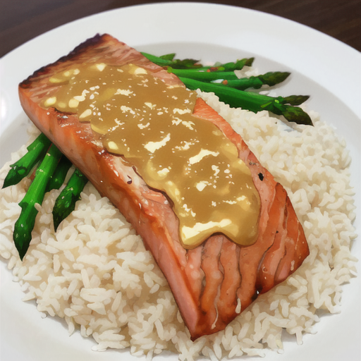

Mustard Salmon

Description
Easy Mustard Salmon made Gluten Free.
Ingredients
- 1.5 lbs skin-on salmon fillets
- 2 Tbs olive oil
- 2 Tbs freshly squeezed orange juice
- 1 garlic clove, minced
- 2 tsp Gluten Free Dijon mustard
- 1/4 tsp salt
Steps
- To make the mustard sauce, whisk 2 Tbs olive oil with the orange juice, mustard, garlic and 1/4 teaspoon salt. Set aside.
- Pat the salmon dry and brush with olive oil before seasoning both sides with salt & pepper.
- Heat a cast-iron skillet over medium-high heat until it's very hot.
- Cook salmon skin-side down over medium-high heat about 3-5 mins. Using tongs flip the fillets and lower heat to medium and cook another 4-5 mins.
- Transfer to a plate and brush the hot fish with mustard sauce.
- Enjoy!